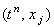

|
Для дифференциального уравнения (5.1) введём
разностную сетку и рассмотрим аппроксимацию производных в точке .
Для аппроксимации производной функции u по времени обычно используется правая
конечная разность (со стабилизацией значения независимой переменной х в точке с
порядковым номером j):
Для аппроксимации производной функции u
по координате х может быть использована как правая конечная разность,
так и левая конечная разность; причём стабилизация значения независимой переменной t
может быть как на n-ом шаге по времени (т.е. в точке tn),
так и на (n + 1)-ом шаге по времени (т.е. в точке tn+1).
Данный выбор позволяет записать для уравнения (5.1) четыре разностные схемы:
1. явная разностная схема с аппроксимацией производной по координате правой конечной разностью
2. явная разностная схема с аппроксимацией производной по координате левой конечной разностью
3. неявная разностная схема с аппроксимацией производной по координате правой конечной разностью
4. неявная разностная схема с аппроксимацией производной по координате левой конечной разностью
Учитывая порядок аппроксимации разностных
операторов, из которых составлены разностные схемы (5.2)-(5.5), легко видеть, что
каждая из них имеет первый порядок аппроксимации и по времени, и по координате:
Чтобы выяснить, какие из разностных схем (5.2)-(5.5)
лучше всего подходят для численного решения уравнения (5.1), необходимо провести
исследование их устойчивости и сравнить методы их решения.
|